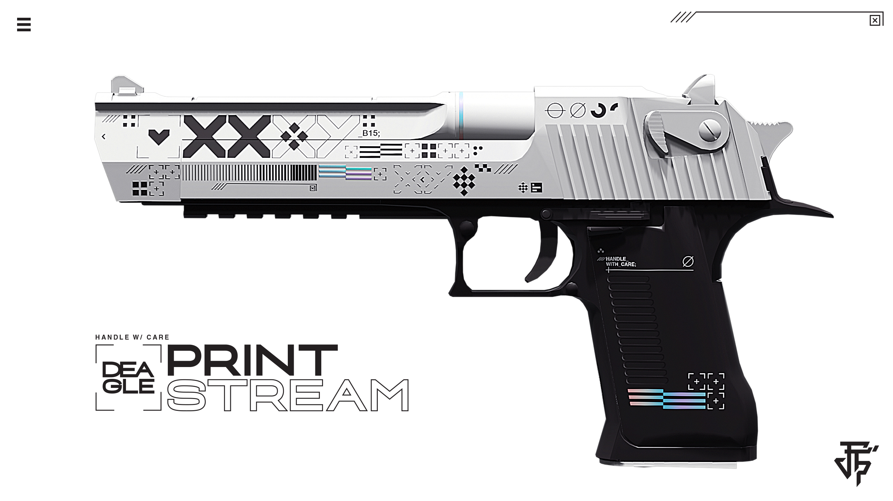
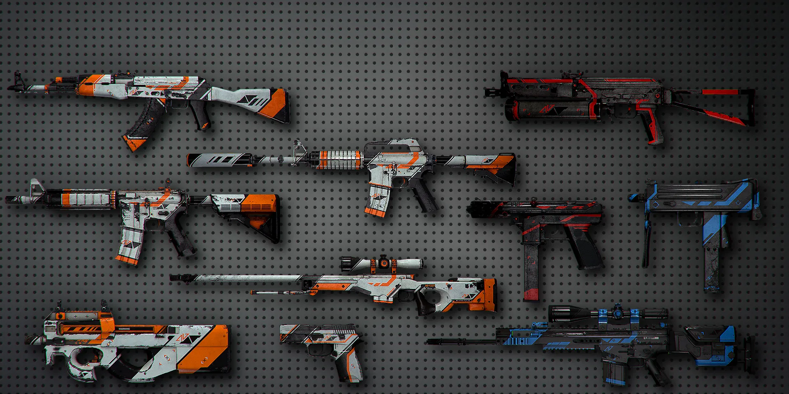
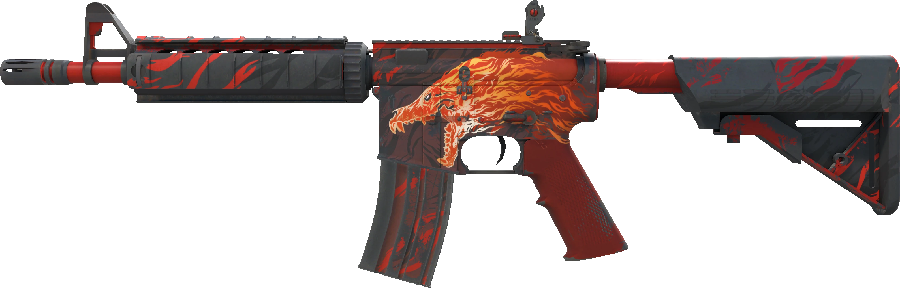
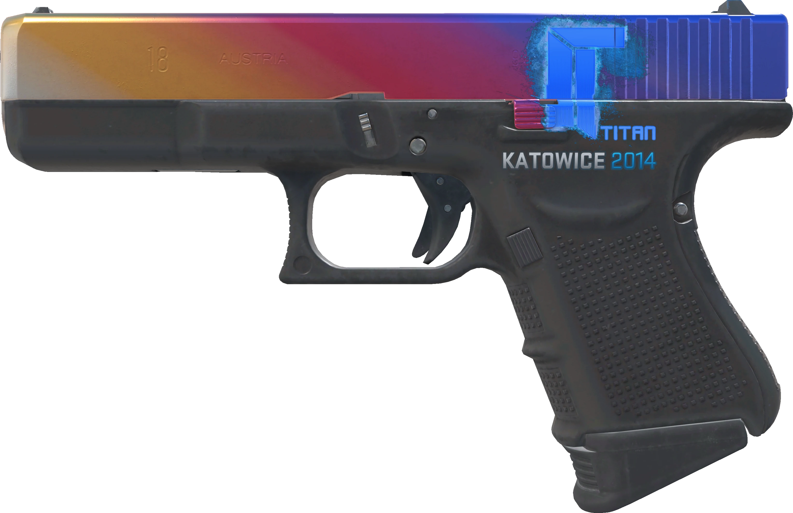

Market Overview
Current Market Health
Analyzing...

Understanding CS:GO Skin Market
The CS:GO skin market represents a unique digital economy where virtual weapon skins can command significant real-world value. These cosmetic items vary in rarity, wear condition, and pattern, which directly influences their market price.
Market trends show that rare knife skins and popular rifle skins, particularly for the AK-47 and M4A4, tend to maintain their value well over time. Factors such as professional player usage, tournament events, and game updates can significantly impact skin prices.
Rarity Tiers
- Consumer Grade (White)
- Industrial Grade (Light Blue)
- Mil-Spec (Blue)
- Restricted (Purple)
- Classified (Pink)
- Covert (Red)
Wear Conditions
- Factory New (0.00-0.07)
- Minimal Wear (0.07-0.15)
- Field-Tested (0.15-0.38)
- Well-Worn (0.38-0.45)
- Battle-Scarred (0.45-1.00)
Special Attributes
- StatTrak™ Technology
- Souvenir Status
- Special Patterns
The CS:GO skin market follows predictable seasonal patterns:
- Winter (Nov-Feb): Higher prices due to increased player activity during holidays and cold weather months.
- Summer (Jun-Sep): Price dips as player counts decrease during vacation months.
- Major Tournaments: Temporary price increases, especially for items featured by professional players.
- Case Releases: New case releases typically cause short-term market volatility.
Since gaining access to CS:GO in 2017, Chinese collectors have dramatically transformed the market:
- Driving price increases for rare items and collectibles
- Shifting trading volume to platforms like Buff 163
- Creating new valuation standards for pattern-based items
- Establishing collection-focused rather than usage-focused ownership
- Contributing to more sophisticated market analytics and pricing
Skin Price Estimator
Recent Market Updates
The CS2 transition has stabilized, with prices returning to more predictable patterns after initial volatility. Knife skins continue to hold their value well, while special pattern items reach new price heights.
Explore Special Categories
Featured Skin Collection

Karambit | Fade
$1,200 - $2,500
One of the most sought-after knife skins in CS:GO. Value depends heavily on fade percentage and pattern.
Premium Collector
AWP | Dragon Lore
$3,000 - $15,000
The legendary Dragon Lore is the pinnacle of CS:GO skin collecting. Prices vary dramatically based on wear.
Luxury Collector
AK-47 | Fire Serpent
$700 - $2,000
A premium rifle skin from Operation Bravo. Limited supply has driven steady price appreciation.
Premium Investment

Desert Eagle | Blaze
$400 - $800
A classic pistol skin from The Dust Collection. Popular for its clean design and limited availability.
Premium Stable
CS:GO Skin Investment Guide
This comprehensive guide covers the basics of CS:GO skin investment strategies, market trends, and risk management techniques.
Skin Gallery




